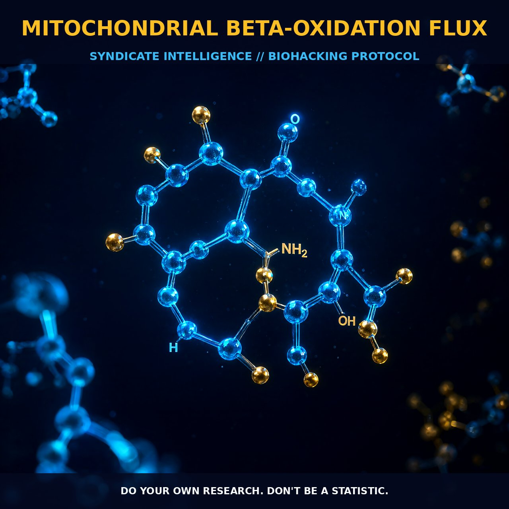

Enhancing Mitochondrial Beta-Oxidation Flux

1. The Mechanism
Mitochondrial beta-oxidation is a fundamental metabolic process that breaks down long-chain fatty acids into acetyl-CoA, a key intermediate in the citric acid cycle. This pathway is essential for energy production, yielding ATP through a series of enzymatic reactions that strip acetyl groups from fatty acids in a repetitive manner.
The process starts with the transport of fatty acids from the cytoplasm into the mitochondrial matrix, facilitated by carnitine acyltransferases. Carnitine palmitoyltransferase I (CPTI) catalyzes the conversion of fatty acyl-CoA to fatty acyl-carnitine, which crosses the inner mitochondrial membrane via the carnitine-acylcarnitine translocase. Inside the mitochondrial matrix, carnitine acyltransferase II (CAT II) converts fatty acyl-carnitine back to fatty acyl-CoA. This conversion enables the fatty acid to undergo a series of enzymatic reactions that progressively shorten the fatty acid chain by two carbon units, generating acetyl-CoA and releasing energy in the form of ATP.
The beta-oxidation process is tightly regulated to ensure efficient energy production. Malonyl-CoA, a metabolite involved in fatty acid synthesis, acts as an allosteric inhibitor of CPTI, controlling the entry of fatty acids into the mitochondria. This regulation is particularly important in tissues like muscle and liver, where the concentration of malonyl-CoA varies based on metabolic needs. Additionally, the redox state of NAD/NADH and ETF/ETFH(2) modulates beta-oxidation flux by influencing the availability of NAD+ and FAD, necessary cofactors for the dehydrogenases involved in beta-oxidation.
2. Biological Leverage
Beta-oxidation is not only pivotal for energy production but also for maintaining cellular homeostasis. The efficiency of beta-oxidation can influence various physiological processes, including muscle performance, cognitive function, and metabolic health. Enhancing the flux through this pathway can have significant implications for energy utilization and cellular resilience.
Increasing the activity of carnitine acyltransferases facilitates the entry of fatty acids into mitochondria, thereby enhancing beta-oxidation and ATP production. This is particularly beneficial in muscle tissues, where increased ATP availability supports endurance and strength. Optimizing the regulation of beta-oxidation flux through CPTI and CAT II can be achieved by manipulating the concentration of malonyl-CoA. Reducing malonyl-CoA levels enhances the uptake of fatty acids into mitochondria, increasing the rate of beta-oxidation. This can be achieved through dietary modifications or supplementation with compounds that modulate malonyl-CoA levels.
The redox state of the cell influences the efficiency of beta-oxidation by affecting the availability of NAD+ and FAD. Ensuring an adequate supply of these cofactors enhances the activity of the dehydrogenases involved in the beta-oxidation process, thereby increasing the rate of ATP production. The control of beta-oxidation flux also extends to the regulation of acetyl-CoA levels, which are critical for the citric acid cycle. By enhancing the efficiency of beta-oxidation, more acetyl-CoA is generated, supporting the citric acid cycle and subsequent ATP production. This has downstream effects on cellular metabolism, influencing processes such as protein synthesis and nucleotide biosynthesis.
3. Tactical Implementation
To optimize beta-oxidation flux, several strategies can be employed. First, dietary modifications can ensure an adequate supply of fatty acids and cofactors required for beta-oxidation. Consuming a diet rich in healthy fats, such as those found in fish, avocados, and nuts, provides the necessary substrates for the process. Additionally, ensuring an adequate intake of vitamins and minerals that are cofactors for beta-oxidation enzymes, such as thiamine (Vitamin B1) and riboflavin (Vitamin B2), supports the activity of these enzymes.
Supplementation with compounds that modulate the activity of carnitine acyltransferases enhances beta-oxidation flux. For example, L-carnitine, a derivative of the amino acid lysine, increases the availability of carnitine for the transport of fatty acids into mitochondria. This is particularly beneficial for athletes or individuals engaged in high-intensity activities, where increased ATP production is crucial. Another strategy is to reduce malonyl-CoA levels through the use of compounds that inhibit its synthesis, such as certain polyphenols found in fruits and vegetables. This enhances the uptake of fatty acids into mitochondria, increasing the rate of beta-oxidation.
Maintaining an adequate redox state supports the activity of beta-oxidation enzymes. Supplementing with ubiquinone (Coenzyme Q10) enhances the electron transport chain, providing the necessary reducing equivalents for the dehydrogenases involved in beta-oxidation. This is particularly beneficial in tissues with high energy demands, such as the heart and brain. Ensuring an adequate supply of ATP through the optimization of ATP synthase activity supports the efficient conversion of ADP to ATP, further enhancing energy production.
Prostar Life Hack
Supplement with L-carnitine before exercise to enhance the uptake of fatty acids into mitochondria and support ATP production during high-intensity activities.
[ AUTHOR: LEAD TECHNICAL RESEARCHER ]